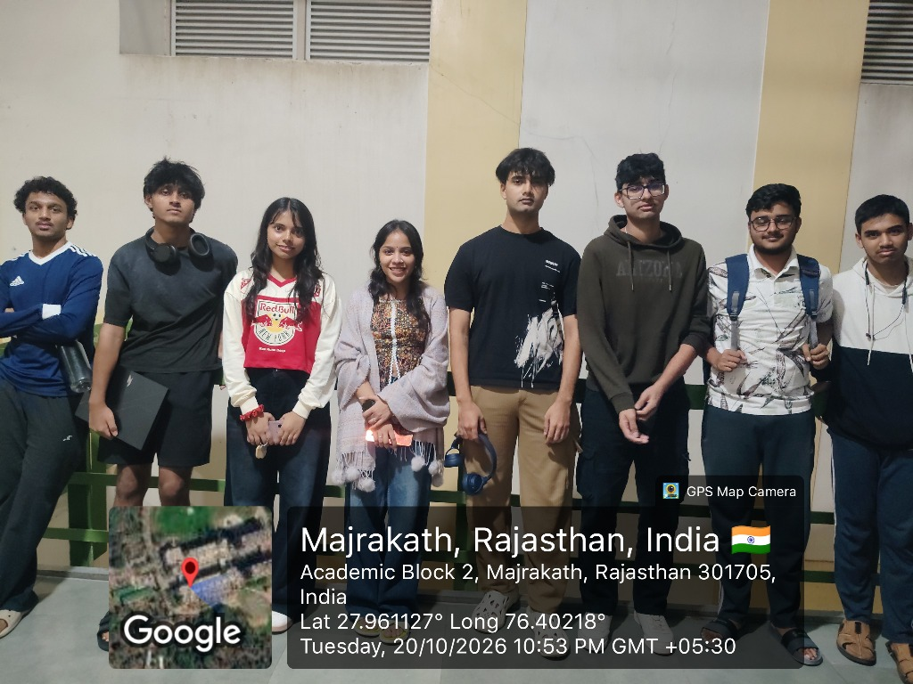
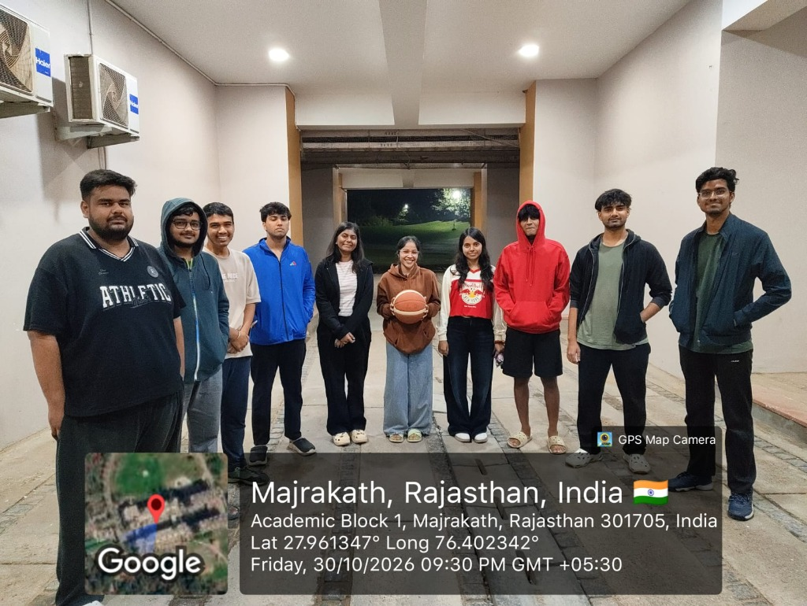
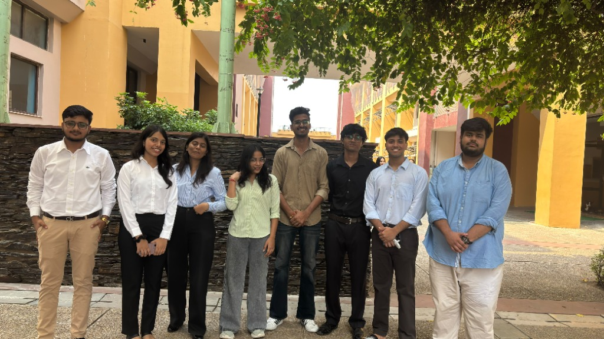
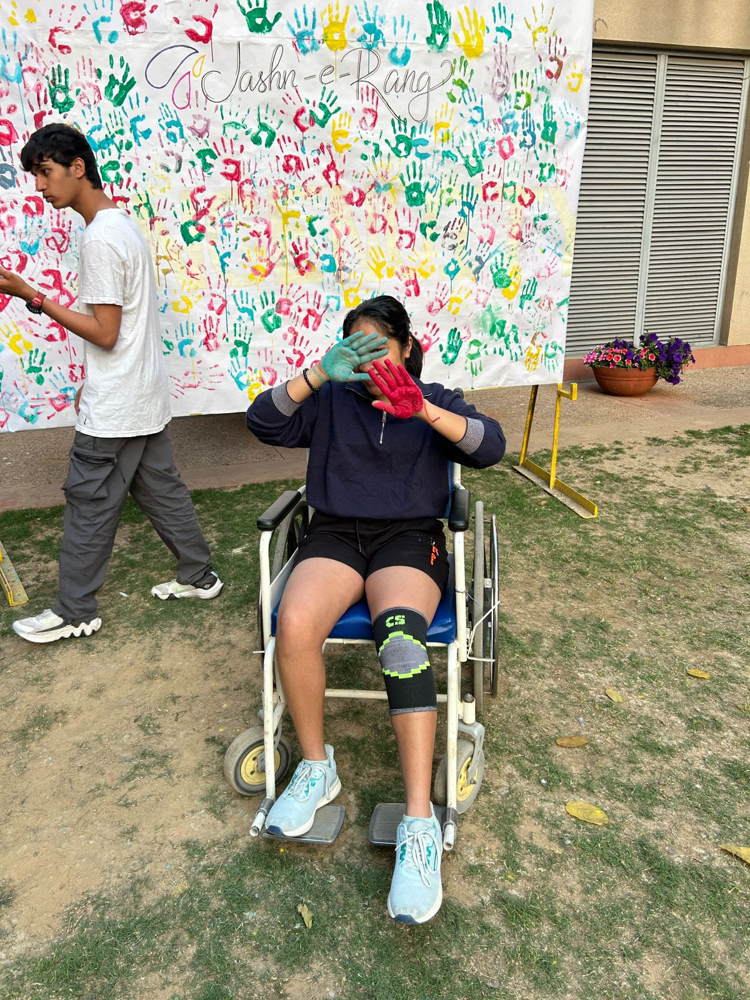
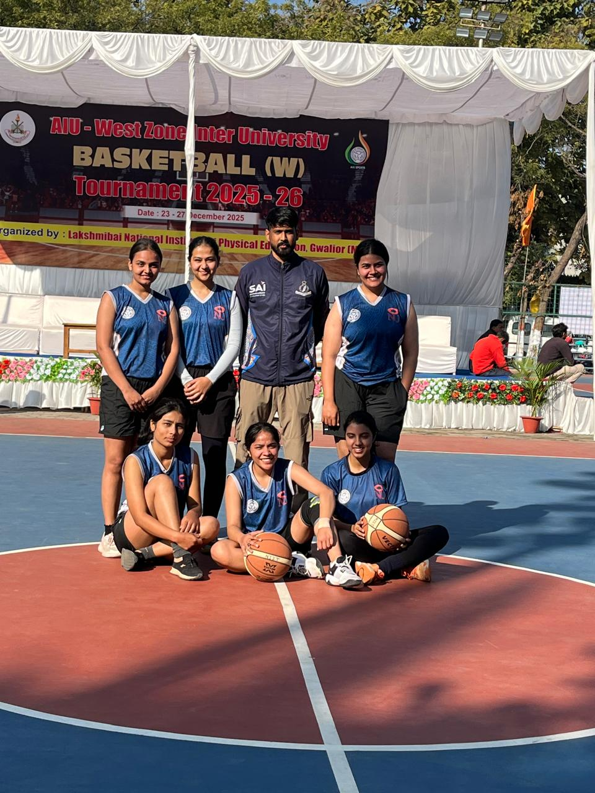

Opening My Project Journal (the unpolished, real version)
A student's reflections on building machine learning tools, mentoring peers, and discovering how I actually learn.
When people build portfolios, they usually make them look spotless. Every chart is clean, every algorithm worked on the first try, and every team project was an effortless triumph.
That isn't how my semester went. This digital journal is my honest record for ET 401 Learning Technologies. Over the last four projects, I inherited 80% of an existing carbon prediction codebase, mentored teammates through debugging sessions, looked closely at how playing basketball and dancing shaped my own hands-on learning style, and caught duplicate resume data that was quietly skewing my machine learning metrics.
The Semester at a Glance:
EcoSmart: Carbon Footprints & Honest Engineering (stepping into an 80% codebase)
Predicting annual carbon emissions from daily habits like transport, recycling, and home energy use.
What EcoSmart Actually Does
EcoSmart was designed to answer a practical question: how much do everyday consumer habits actually contribute to individual annual carbon footprints? Instead of asking people for complex industrial metrics, the model takes lifestyle inputs—such as daily vehicle commute distance, recycling habits, diet, cooking energy, and heating sources—and predicts annual CO₂ equivalent emissions in kilograms.
Joining a project that is already ~80% complete is a very specific kind of learning. In school, we're almost always taught to start from an empty file: `import pandas as pd`. In reality, engineers almost always inherit other people's variable names, half-finished schemas, and unspoken assumptions.
My Key Contributions (The 20%)
- Model Verification & Evaluation: Evaluated the 100-tree Random Forest Regressor using scikit-learn. Verified the reported test metrics (R² = 0.844, RMSE = 402.9, MAE = 315.4) and confirmed feature importances, noting that daily vehicle distance and heating fuel type accounted for the greatest portion of emission variance.
- Flask API Integration: Connected the trained regressor pipeline to Flask endpoints with proper input validation so the multi-step frontend form could return real-time emission estimates without freezing.
- Power BI What-If Dashboard: Built an interactive Power BI dashboard complementing the web form. It allows filtered comparisons across demographic groups and lets users run "what-if" scenarios (e.g., "What happens to group emissions if daily car travel decreases by 15 km?").
- Documentation & Limitations: Explicitly documented project constraints—specifically that Random Forest regression should never be trusted for extrapolating far beyond the training data range (e.g. extreme unrecorded lifestyle cases).
Mentoring the LPL Team: Navigating the Unexpected (when two members left campus)
Reflections on an unexpected team crisis, redistributing vacant responsibilities, and learning what real coordination takes.
The Sudden Void: When Two Members Left
When we started the LPL mentoring project, we had a clear roadmap. Every module was mapped out, responsibilities were allocated, and the timeline felt manageable on paper. But halfway through the semester, we hit an unexpected reality check: two of our team members left campus.
Suddenly, their roles, code deliverables, and project duties were completely vacant. For a couple of days, the anxiety was palpable. Deadlines were not going to shift just because our roster shrank, and nobody from outside was going to step in to do the work for us. It was the first time in university that a project wasn't just about writing code—it was about emergency team management.
Regrouping & Redistributing Responsibilities
Instead of letting frustration set in or allowing the work to stall, we called an open meeting. We sat down together outside the academic block, spread out the project requirements, and faced the gap directly.
The worst mistake would have been dumping the orphaned work onto one person. Instead, we talked openly about what remained:
- Auditing capacity: We honestly evaluated who was comfortable with which modules and what each person could realistically handle alongside their academic load.
- Redividing the orphaned tasks: We redistributed the vacant responsibilities proportionally. Everyone took on an additional piece that matched their strengths.
- Setting clear ownership: Every task had an assigned owner so nothing fell into the ambiguous cracks between teammates.



Coordinating the New Normal
Reassigning tasks on a sheet of paper is relatively straightforward; making sure everyone actually delivers the extra work without getting overwhelmed is the real challenge.
We couldn't afford miscommunication or people silently getting stuck on unfamiliar code. We instituted quick, informal evening syncs—often standing right outside Academic Block 1 or 2 after class. The rule was simple: raise blockers early. If someone was struggling with an integration or feeling overloaded, we shifted small parts around immediately.
As someone mentoring teammates through their new tasks, I made a conscious effort never to criticize someone for taking longer. We were all carrying extra weight. Keeping morale high and making sure everyone felt supported kept the momentum alive.
Understanding Myself & How I Learn (court, dance floor & terminal)
A reflection on visual and kinesthetic learning through basketball and dance, and how it shaped my approach to software.
Visual & Kinesthetic: My Actual Learning Style
I have never been someone who learns by sitting quietly with a 500-page theoretical textbook. My project report for P3 gave me the opportunity to step back and honestly examine how I acquire new skills. The answer didn't come from a classroom lecture—it came from my two lifelong passions: dance and basketball.
In dance—which I started as an infant dancing to dholki beats instinctively, and later developed into choreographing my own routines and entering university battles—I learn by watching a movement broken down visually, and then rehearsing it repeatedly until my muscles take over. In basketball—where I began in 7th grade, won CBSE Clusters, represented Meerut in U14, U16, and U18, and captained my university team at AIU—my late coach Yadav sir taught through drills. He would demonstrate defensive footwork once or twice, and we would repeat it until it became second nature.
This directly explains how I approach code: I cannot truly understand an algorithm or data structure until I see its data flow visually, trace its pointer shifts, and build it hands-on in a notebook. Theoretical descriptions only click when my fingers are actually running test cases.
Persistence Through Real Adversity
Both passions tested my resilience in ways that directly carry into my career:
- The Knee Injury: During my first year at university, a knee injury forced me off the court and stage. Dealing with pain and wearing a knee cap taught me physical and mental patience. It made me focus on strengthening exercises, pacing myself, and staying focused even when progress felt slow.
- Stage Fear: Stepping out for dance battles or captaining a high-stakes basketball match always comes with internal nervous tension. I learned not to fight the fear, but to channel it into intense focus and preparation.
- The Loss of Coach Yadav Sir: In 11th standard, Yadav sir passed away. He had fundamentally sharpened my game and believed in my leadership. It was a true breaking point. Pushing forward, returning to the court, and leading my university team at AIU became my way of honoring the discipline he instilled in me.
Where Technology Meets My Passions
In P3, I explored how emerging technologies could solve real problems I face as an athlete:
Using MediaPipe/OpenPose to track joint angles during jumps and landings to monitor knee alignment and avoid risky reinjury patterns.
Using browser AR to project tactical drill markers on the court, or VR mental rehearsals on high-pain days without physical joint load.

 "Dance gives me rhythm; basketball gives me grit."
"Dance gives me rhythm; basketball gives me grit."

Resume-to-Job Gap Analyzer (the duplicate data discovery)
Extracting skills from resumes, classifying fit, and catching a critical data leakage trap that changed our metrics.
What We Built
The Resume-to-Job Gap Analyzer is an end-to-end Python web tool that compares candidate resumes against job description requirements. Instead of relying on vague black-box AI summaries, it maps extracted text against a curated 73-skill taxonomy, calculates match percentages across critical domains, and uses a trained LinearSVC model to classify overall role suitability.
The Pivotal Discovery: Duplicate Data Trap
During early model runs, our test metrics looked suspiciously great—almost 99% accuracy. For a moment, it was tempting to celebrate and put the numbers in the report. But anyone in machine learning knows that near-perfect accuracy on noisy text is usually a red flag.
When I investigated the raw dataset, I discovered that multiple near-identical resume entries existed across both the training and test splits. The model hadn't learned generalized skill relationships; it was memorizing duplicates that had leaked across the partition.
Removed all duplicate text rows, rebuilt the vocabulary, and tested strictly on unseen candidate resumes. Result: 90.9% fit accuracy and 95.2% skill extraction F1. These numbers are genuine and hold up on unseen files.
Early raw dataset contained duplicate resume entries that bled across train and test partitions. Accuracy appeared to be 98.7%, but the model was simply recognizing repeated text. Discovering and cleaning this was my proudest debugging moment.
A Glimpse of the 73-Skill Taxonomy:
What Comes Next: Staying Grounded (the engineer I want to become)
Reflections on growth across ET401, preparing for my NIIT internship, and the skills I still need to master.
Looking Back Over the Journey
When this semester began, I thought being good at technology just meant writing working code quickly. Across these five chapters, that definition changed completely:
- In P1 (EcoSmart): I learned that taking over an existing codebase requires humbleness and careful reading rather than hasty rewriting.
- In P2 (LPL Mentoring): I realized that technical leadership is about empowering peers to debug their own work, rather than grabbing the keyboard.
- In P3 (Self-Reflection): I connected my kinesthetic learning style to my passions in basketball and dance, acknowledging that adversity—like injuries and the heartbreaking loss of coach Yadav sir—is where real character is built.
- In P4 (Resume Gap Analyzer): I learned that confronting data leakage and choosing an honest 90.9% over a fake 99% is the true test of engineering integrity.
What I Still Need to Improve (No Pretense)
I am not a complete, all-knowing software architect yet, and pretending to be one would be dishonest. Here are the specific areas I know I need to develop next:
Going deeper into Kafka partition strategies, event-driven backends, and low-latency websockets beyond isolated lab scripts.
Moving from local Jupyter prototypes to automated model deployment, population stability index (PSI) monitoring, and CI/CD pipelines.
The Upcoming Step: NIIT Internship
I've taken a step closer to my dreams! I've been shortlisted for the Data Scientist Intern role at FlyNava Technologies. A new journey awaits, filled with real-world challenges, learning, and opportunities to grow.
One step closer, many more to go.
My approach will remain what it has always been: keep the athlete's drill discipline, the dancer's attention to rhythm and timing, and the student's curiosity to keep asking questions until the architecture makes complete sense.